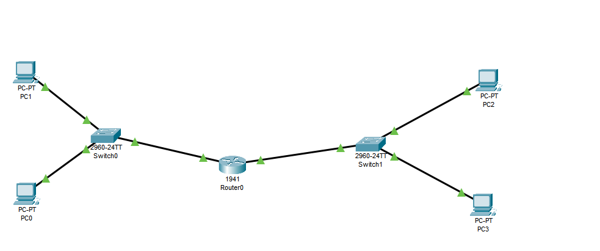
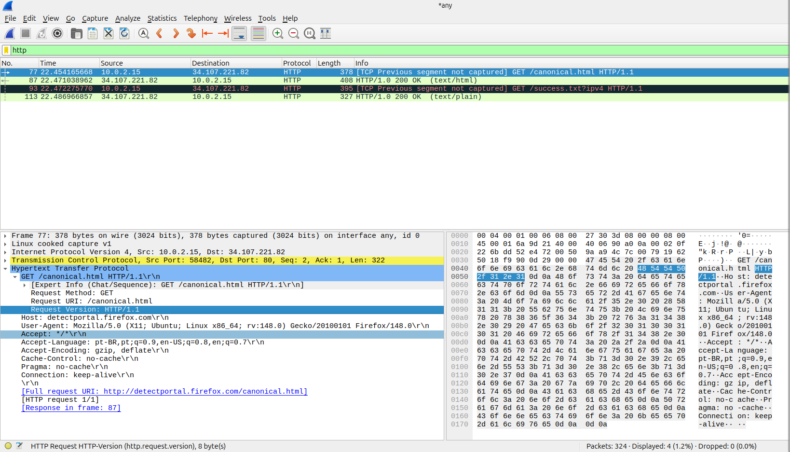
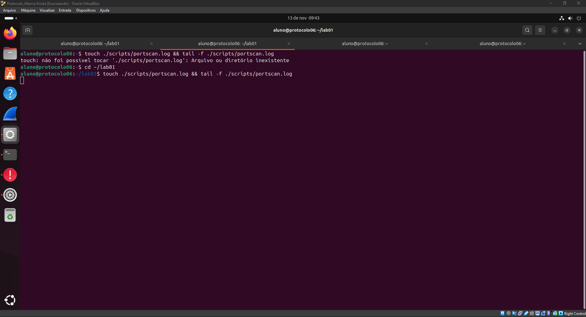

Estudante do curso técnico em Redes de Computadores no CEET Vasco Coutinho.
Sou estudante do curso de Redes de Computadores. Durante a minha formação no CEET Vasco Coutinho desenvolvi conhecimentos práticos em configuração de roteadores e switches, cabeamento estruturado, servidores Windows/Linux, segurança de redes e projetos IoT.

Descrição: Configuração de um roteador Cisco 1941 para interligar duas redes locais distintas (LANs) com switches 2960, incluindo definição de endereços IP e gateway padrão.
Código / Comandos:
interface gig0/0
ip address 192.168.1.1 255.255.255.0
no shutdown

Descrição: Captura e inspeção de tráfego de rede em ambiente Ubuntu utilizando o Wireshark para análise de requisições HTTP, cabeçalhos TCP/IP e diagnóstico de comunicação.
Código / Filtros usados:
http
ip.addr == 10.0.2.15

Descrição: Laboratório prático em Linux/Docker simulando varreduras com Nmap e bloqueio de pacotes maliciosos com regras de firewall iptables e monitoramento de logs.
Código / Comandos:
nmap -sS 192.168.20.10
iptables -A FORWARD -p tcp --tcp-flags ALL FIN,PSH,URG -j DROP
Email: ericka.santos2102@gmail.com